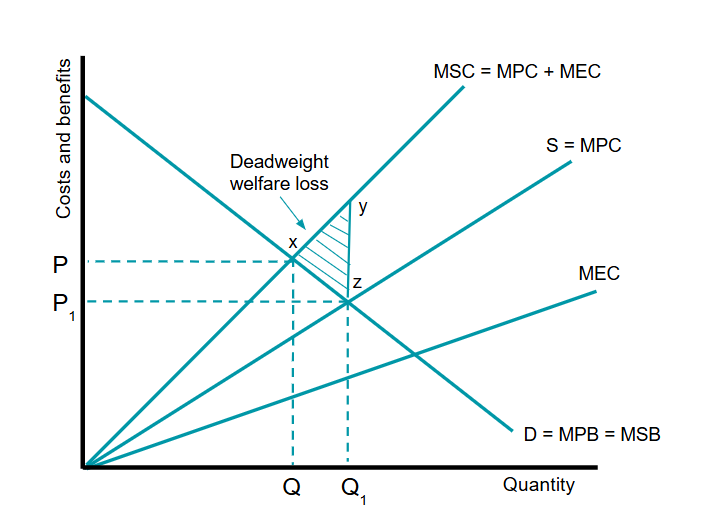
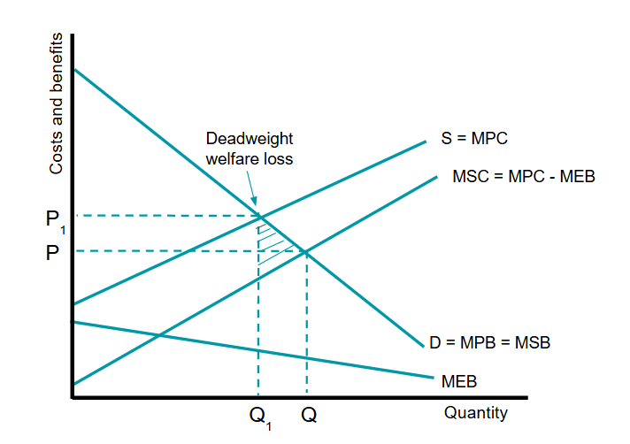
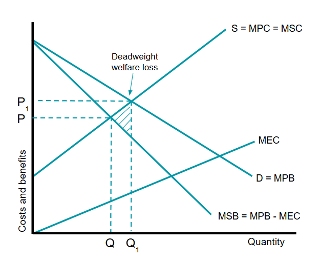
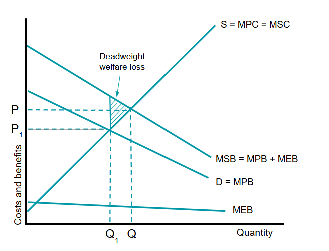

A transaction between and consumer and producer for a good/service should only affect those who are involved. However a problem could arise if a third-party, someone not directly involved, is affected by that economic decision. The effect on the third party is known as an externality.
Example of an externality: people living along the flight path to an airport will experience increased noise disturbance if the number of flights increases. The third-party is the people living along the flight path.
Externalities can be either positive or negative.
A negative externality occurs when the side effects have a damaging impact on third parties involving unexpected costs to them.
A positive externality occurs when the side effects provide unexpected benefits to third parties.
Private costs (PC) and private benefits (PB) are experienced by people who are directly involved in the decision to take a particular action.
Private costs therefore are costs incurred by producer and consumers involed in the economic decision. Private benefits are directly received by those who produced or consumed the good/service.
External costs (EC) and external benefits (EB) are a consequence of externalities that arise from a particular action
External costs and benefits are not paid for, nor do the advantages accrue to those responsible for the action. Instead they will fall on the third parties.
Social costs (SC) and social benefits (SB) are the total costs and benefits inccured or accruing to society as a result of a particular action.
Social Costs = Private Costs + External Costs
Social Benefits = Private Benefits + External Benefits
It is also possible to recognise when the externalities are the result of production or consumption decisions.
Negative externalities of production occur when third parties are harmed by the production of a good or service
A common case is environmental pollution. Suppose a firm illegally disposes of toxic waste which emits toxic fumes into the atmosphere. A production externality occurs because theres additional costs imposed to the community - those living nearby the factory may suffer respiratory issues.

This figure shows how negative externalities of production causes market failure.
The socially optimum output Q is where the marginal social benefits (MSB) = marginal social cost (MSC).
In a free market, producers ignore the external costs to others. Therefore the actual output will be at Q1 where Demand = Supply or marginal private cost (MPC) = marginal private benefit (MPB).
This is socially inefficient because the output is above the optimum level, resulting in too much toxic waste emitted by the factory.
The triangular shaded area is called the deadweight welfare loss due to overproduction/overconsumption.
Explanation of the graph
Positive production externalities occurs when a third party benefits from the production of a good
For example, building a train station may provide shelter for the homeless when it is raining.

The socially efficient level of output is at Q where MSB = MSC.
However, in a free market the production level is at Q1 since the firm will ignore benefits to third parties.
The deadweight welfore loss is a result of this underproduction.
Explanation of the graph
Negative consumption externality occurs when consuming a good causes a harmful effect to a third party
Consuming cigarettes causes passive smoking to others in the vacinity. The cost of treating those subjected to passive smoking is not paid for by the smoker

Social efficiency occurs at a lower output Q – where social marginal benefit = social marginal cost.
However, in a free market, we get Q1 output. At this output, the social marginal cost is greater than the social marginal benefit.
The deadweight welfore loss is caused by overconsumption.
Explanation of the graph
Positive consumption externalities occurs when the consumption of a good/service benefits a third party.
An example is the provision of healthcare. Not only does it benefit the recepient, but also the economy. A healthy population is likely to raise living standards, and in turn a higher rate of economic growth.

Therefore MSB > MPB.
Social efficiency would occur at Q where MSC = MSB.
However, in a free market, consumption will be at Q1 because demand = supply (private benefit = private cost )
Deadweught welfare loss is due to under-consumption of the positive externality.
Explantion of the graph
# When drawing diagrams, it is important to be clear on whether you're dealing with production or consumption externalities. Production externalities affect cost curves. Consumption externalities affect benefit curves.
The underconsumption of merit goods and the over consumption of demerit goods is because consumers make choices based on imperfect information.
Asymmetric information occurs when one party in the market has some information that the other party does not know.
A good example is when selling a used car, the owner is likely to have full knowledge about its service history and its likelihood to break-down. The potential buyer, by contrast, will be in the dark and he may not be able to trust the car salesman.
In some other markets, buyers may have some information unknown to the seller. Suppose you want a bank loan to set up a business. The bank has to take a risk by assuming the information provided by the borrower is correct. After all, only the borrower knows whether they will be able to pay back what is owed.
There are two types of asymmetric information: Adverse Selection and Moral Hazard.
Adverse selection occurs when there is asymmetric information between buyers and sellers. Hidden characteristics, when one party knows more about a situation than the other party. This unequal information distorts the market and leads to market failure.
For example, buyers of used cars may end up purchasing more low quality cars in the market.
Moral Hazard is the concept that individuals have incentives to alter their behaviour when their risk or bad-decision making is borne by others. Hidden actions, when one party takes action that the other party cannot observe but which affect both of them.
For example, if a country knows it will receive a bailout from the IMF, then it may feel less incentive to reduce debt. Moral hazard is particularly a problem in the insurance market because when insured, people may be more liable to lose things.
To sum it up: a moral hazard is any situation in which one person makes the decision about how much risk to take, while someone else bears the cost if things go badly.
A cost-benefit analysis is a useful technique to aid decision-making, which takes in the full social costs/benefits, not just private cost/benefits. This analysis of costs and benefits is used by the public sector as it attempts to quantify the opportunity cost to society.
These analyses often have to provide a shadow price for costs/benefits where no market price is availible. For example, in the case of of transport projects, there is a need to value the benefit of travel time savings, cleaner air, and living a less noisy environment.
There are four main stages in the development of a cost-benefit analysis:
Externality: where the actions of a producer or consumer give rise to side effects on others not directly involved in the action.
Third party: those not directly involved in the decision-making.
Negative externality: where the side effects of an action have a negative impact that imposes costs on third parties.
Positive externality: where the side effects of an action have a positive impact that provides benefits to third parties.
Private costs (PC): those costs that are incurred by a consumer or by the firm that produces a good or service.
Private benefits (PB): those benefits that are accrue to the a consumer or to the firm that produces a good or service.
External costs (EC): those costs incurred and paid for by a third party not involved in the action.
External benefits (EB): those benefits that are received by a third party not involved in the action.
Social costs (SC): the total costs of a particular action.
Social benefits (SB): the total benefits of a particular action.
Deadweight welfare loss: the loss in welfare arising from an inefficient allocation of resources.
Asymmetric information: where one party has more or better information than another in a business transaction.
Adverse selection: when sellers have information that buyers do not have on product quality or when buyers have information that sellers do not have on product quality.
Moral hazard: the temptation to take risks when some other party is covering these risks.
Cost-benefit analysis: a method of decision-making that takes inot account the costs and benefits involved.
Shadow price: one that is applied where there is no established market price availible.